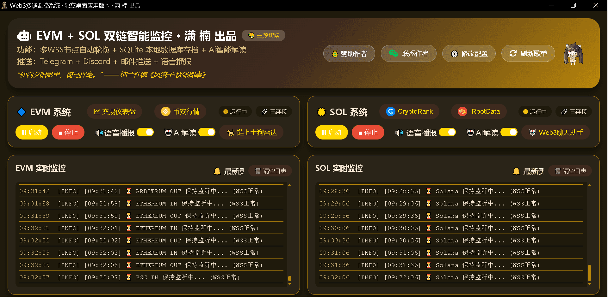
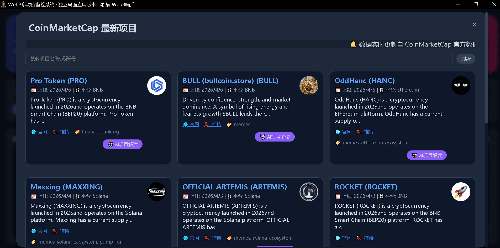
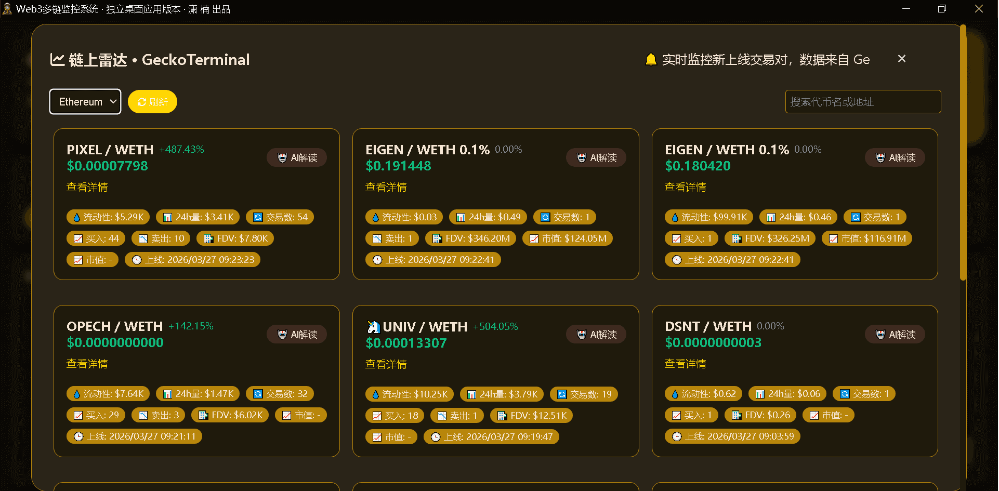
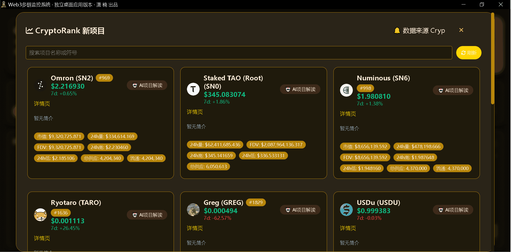
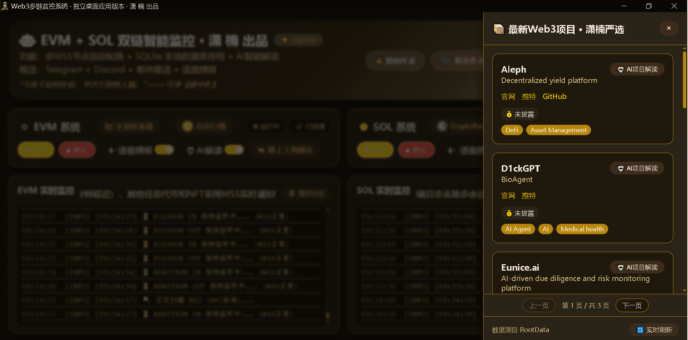
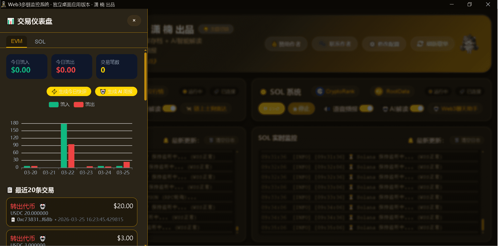
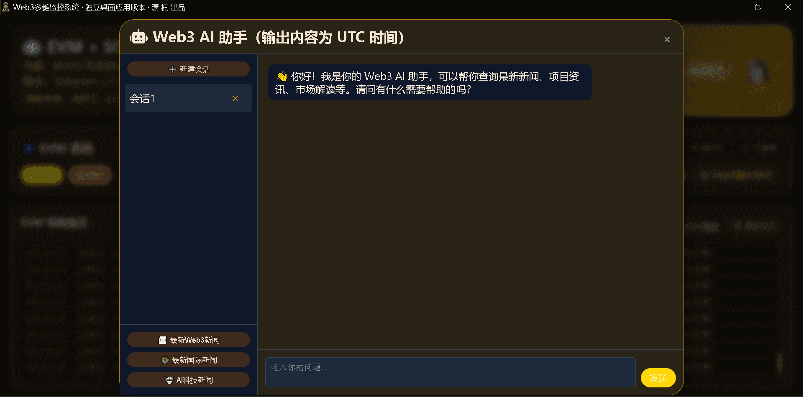
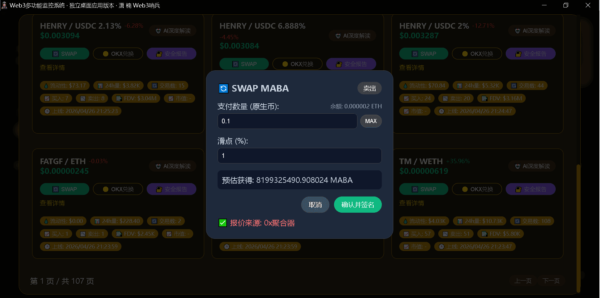
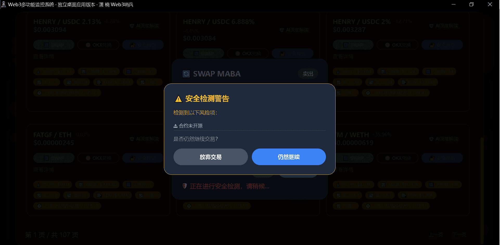
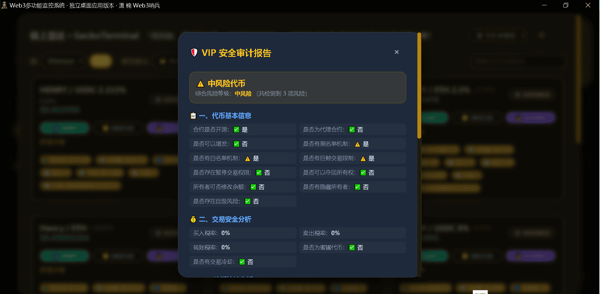

EVM + Solana 双链实时追踪，AI 解读交易与风险。内建多聚合器 SWAP 引擎，连接钱包即可一键交易，自动比价、强制安全检测，高风险代币自动拦截。RootData 新项目推送，GeckoTerminal 链上新币雷达，地址标签管理。从监控到交易，一站完成。
链上仪表盘 · 毫秒级推送 · 悬浮窗通知 · 标签管理
软件内直接完成链上交易，无需跳转外部 DEX。系统自动向 0x、ParaSwap、OKX DEX 等多个聚合器请求实时报价，自动选择最优路径。连接 MetaMask 或 Phantom 钱包后，实时显示余额，支持一键填入最大可交易数量。EVM 和 Solana 双链全面支持。
点击"确认并签名"后，系统自动调用 GoPlus API 对目标代币合约进行安全扫描。低风险代币静默放行；中风险代币弹出详细风险项（如合约未开源、税率过高）供您判断；高风险代币（如蜜罐、钓鱼地址）强制拦截并醒目警告。检测失败时提示用户自行决定，确保交易安全。
支持 Ethereum、BSC、Polygon、Arbitrum、Base 及 Solana 链上实时交易追踪，原生币、ERC20/SPL代币、NFT 变动无遗漏。多WSS节点自动轮换，高可用连接。
为任意地址添加自定义标签（颜色可自定义），支持批量导入导出。内置 GoPlus 安全检测，一键分析地址是否为恶意地址、合约或普通地址，并展示详细风险字段（网络犯罪、洗钱、钓鱼等18+维度），自动推荐标签名与风险等级。标签数据本地持久化，重启不丢失。
集成 DeepSeek/Moonshot 大模型，自动分析大额转账、风险评分、资金流向，生成专业交易解读与操作建议。支持情感化评语，让监控更生动。
实时抓取 Solana、Ethereum、BSC 等链上新上线交易对，展示价格、流动性、成交量，支持 AI 解读项目风险，第一时间发现潜力 Meme 币。
自动同步 CryptoRank/CMC/GeckoTerminal 最新项目库，RootData 新项目实时推送，附带融资信息、社交链接，帮助您抢占一级市场先机。
Telegram、Discord、邮件、语音播报，重磅交易高亮提醒。桌面悬浮窗实时显示资产变动和RootData新项目，不错过任何重要动态。
每日流入/流出统计图表，AI 自动生成投资摘要日报与周报，资产动向可视化，辅助决策。
内置 AI 聊天机器人，支持联网搜索（Moonshot）或离线知识（DeepSeek），可查询实时新闻、项目分析、市场解读，多会话管理。
前端界面直接编辑 JSON 配置文件，修改后自动重启子进程。支持 HTTP/Socks 代理，国内网络无障碍使用。
系统依次向 0x、ParaSwap、OKX DEX 及链上 DEX 合约请求报价，自动选择最优路径，覆盖市面上绝大多数主流代币与流动性池。
通过外部浏览器安全连接 MetaMask（EVM）或 Phantom（Solana）钱包，主界面实时显示当前链钱包余额，支持一键填入最大可交易数量。
每次交易确认前，系统自动调用 GoPlus API 对目标代币合约进行安全扫描。低风险静默放行，中风险弹出风险项供用户判断，高风险（蜜罐、钓鱼）强制拦截并醒目警告。
签名完成后自动获取交易哈希，在区块浏览器中追踪交易状态，用户无需离开软件即可掌握交易全流程。交易成功/失败/取消均有明确提示。
机器人即时推送，支持自定义频道
嵌入式通知，精美卡片展示交易详情
SSL加密发送，支持SMTP配置
大额交易语音提醒，可自定义音频
实时滚动通知，不干扰工作流
企业级消息推送
首个版本上线，支持 Ethereum、BSC、Polygon 等 EVM 兼容链的 RPC 轮询监控，实时捕获原生币与代币的转入/转出变动，为后续多链扩展奠定基础。
正式集成 Solana 链，同样采用 RPC 轮询机制，实现对 SPL 代币和 SOL 原生币的全面监控，成为业内首批同时覆盖 EVM 与 Solana 的桌面监控工具。
新增 Telegram、Discord、邮件及本地语音播报四种通知渠道，大额交易自动高亮提醒，确保用户不再错过任何重要链上动态。
集成 DeepSeek/Moonshot 大模型，自动分析交易意图、风险评分并生成操作建议，同时支持幽默评语，让冰冷的链上数据“开口说话”。
引入 WebSocket 订阅机制，代币与 NFT 变动从轮询延迟升级为毫秒级实时推送，大幅提升监控灵敏度与用户体验。
前端界面支持直接修改 JSON 配置文件，无需重启主程序即可生效；实现主进程与子进程的高效双向通信，降低使用门槛。
加入深色/浅色主题切换功能，适配不同光照环境下的视觉偏好，同时优化了界面布局与响应式设计。
自动推送 RootData 最新融资项目，第一时间推送项目名称、融资额、社交信息，帮助用户抢占一级市场先机。
图表化展示每日资金流入/流出，AI 自动生成投资摘要日报与周报，资产动向一目了然，辅助科学决策。
新增桌面悬浮窗实时滚动通知；集成 CryptoRank、GeckoTerminal、CoinMarketCap 链上新币雷达，监控新币对并支持 AI 解读；内置 Web3 AI 聊天助手，支持联网搜索与多会话管理。
重磅推出地址标签功能，支持自定义标签名称与颜色，本地 SQLite 持久化存储，日志中自动替换显示标签。集成 GoPlus Security API，一键分析地址是否为恶意地址、合约地址或普通地址，展示18+风险维度，自动推荐标签名与风险等级。多链支持（ETH/BSC/Polygon/Base/Arbitrum），让每个链上地址拥有“身份铭牌”，极大提升监控可读性与安全性。
重磅推出内建多聚合器 SWAP 交易功能，无需跳转外部 DEX 即可完成链上交易。支持 0x、ParaSwap、OKX DEX 等多聚合器自动比价，连接 MetaMask/Phantom 钱包后实时显示余额并一键填入最大交易量。集成 GoPlus 强制安全检测，交易前自动扫描代币合约风险，低风险放行、中风险警告、高风险强制拦截，为每笔交易筑起最后一道安全防线。EVM 五链 + Solana 全面支持。
自动识别交易意图，分析风险等级，给出操作建议，帮助您理解链上行为。
汇总过去24小时/7天交易记录，生成专业投资摘要，资产趋势一目了然。
大额交易语音提醒，AI 生成趣味性评语，让监控更生动。

实时仪表盘 · 多链状态总览

CMC新币实时监控

链上雷达实时监控

CryptoRank跟踪

RootData项目推送

交易仪表盘

WEB3助手

SWAP

交易风险监测

VIP安全报告
桌面应用 · 绿色免安装 · 支持 Windows 10/11
⚡ 软件定制 · 持续更新